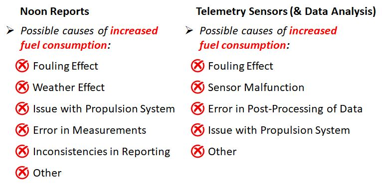
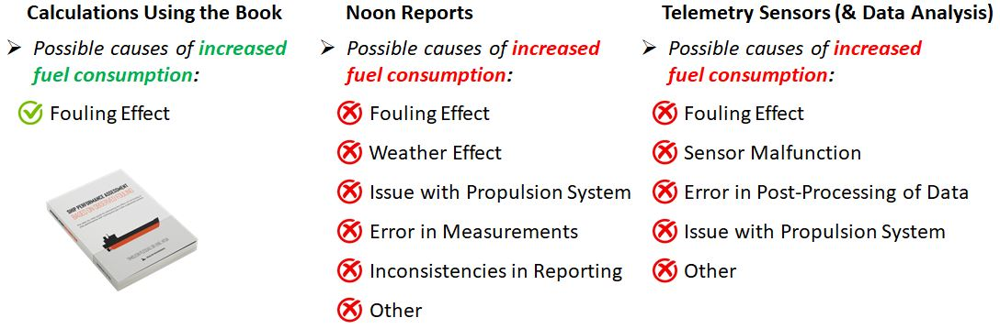

Estimate the Effect of Fouling in Ship Performance Within Seconds just by Looking at a few Underwater Photographs
Hello!
If you are reading this, you are probably working in the shipping industry and you want a quick and easy methodology that will provide a rough estimation of the effect of hull fouling in ship’s power and fuel consumption.
Unfortunately, existing means for identifying and quantifying the effect of fouling in ship performance are either unreliable (e.g. noon reports) or require significant effort to extract useful results (e.g. Sensors & Data Analysis) and even then, caution is needed in order to be sure that the calculated increase in power/fuel consumption is a result of fouling.
Although these tools can be useful and can provide accurate results if they are handled properly, none of them is necessary in order to have a rough estimation of the effect of fouling in ship performance instantly.
How useful would it be if you could have a rough estimation of the effect of hull fouling on your vessel’s fuel consumption just by looking at a photo from an underwater inspection? ( WITHOUT measurements, WITHOUT sensors, WITHOUT noon reports, WITHOUT data analysis)
I present you the book:
“SHIP PERFORMANCE ASSESSMENT BASED ON OBSERVED FOULING"
The step-by-step guide for estimating the effect of hull fouling in ship performance with nothing but just a few underwater photos!
It is a simple, compact technical manual (only a few pages - can be read within 1 hour) that will translate an underwater observation of a hull to a rough estimate of additional power and fuel consumption in less than 1 minute by utilizing an extensive library of diagrams for a wide range of vessels of different types and sizes (450+ diagrams for most ship types and sizes are included in the book), that allow instant assessment of the observed fouling and its effect in the performance of the ship.

Reliable Rough Estimation of Added Fuel Consumption due to Fouling within seconds
The calculations in the book rely solely on the observed fouling. If fouling is observed, then there is definitely some increased consumption, and by using this book you can have a reliable rough estimation.
On the other hand, if additional consumption is measured (via noon reports, sensors etc.), you can’t always tell if the observed increase in fuel consumption is caused by fouling. Thus noon reports, sensors etc. are not always reliable to estimate the effect of fouling.
Effective Ship Performance Monitoring Based Only on Observed Hull Condition

"Why is this book useful?"
The existing guidelines regarding the management of biofouling, lack the overall connection between the visual inspection (e.g. underwater inspection), the performance prediction (e.g. estimation of added Power/Fuel Consumption) and the relevant action (e.g. hull cleaning). MEPC's "Guidelines for the control and management of ship's biofouling to minimize the transfer of invasive aquatic species" offers a simple methodology that links the visual aspect with the required action based on a fouling rating, but doesn't offer much guidelines regarding the expected performance prediction based on the observed biofouling. On the other hand, ISO 19030 focuses on the analysis of high-frequency data in order to estimate the performance of the vessel but doesn’t offer much guidelines on how this performance prediction is connected to the observed fouling. The methodology presented in the book attempts to bridge the gap between these two approaches. It doesn't provide the accuracy of the ISO standard, but it will always provide reliable rough estimations of the performance of a ship within seconds, by utilizing only underwater photos (no other information/data/logs required).

"How is this possible?"
First, let me introduce myself:

My name is Timoleon Plessas and I am the founder of Sealion Engineering. I have studied Naval Architecture and Marine Engineering at the National Technical University of Athens and I hold a PhD in the field of “Ship Design Optimization”. I have participated with the National Technical University of Athens in EU-funded projects where I developed models and tools for simulation and optimization of various systems of merchant ships with numerous peer-reviewed papers published in journals and conferences. I have also worked in the energy department of a large Greek shipping company with 70+ ships of various types and sizes. There, I participated in the monitoring of vessel’s performance by developing sophisticated tools for handling high-frequency data and arranging underwater hull inspections and hull cleanings.
This experience gave me a better understanding on how the observed fouling is linked to the actual performance of the vessel since the effect was measured by the installed sensors.
In short, the main idea of this book is simple: The effect of fouling in the performance of a ship can be adequately quantified based on the observed condition on the hull. Although it can’t be quantified down to the last digit, its effect in general can be put within an expected range in terms of power increase just by observing it.
So, I studied the available scientific research on the subject and used the most appropriate methods, in order to transform the qualitative and empirical knowledge to a formal methodology and create a simple and quick solution, that will help anyone to skip the years of experience needed in order to feel confident about how the observed fouling affects the performance of a ship using nothing else other than a few underwater photographs.
This methodology can be applied to ships of all types and sizes. 450+ diagrams that predict the effect of fouling have been generated and included in the book in order to make it a stand alone tool for monitoring the performance of a ship when no other information is available other than a few underwater photos.
Frequently Asked Questions
Does it take time to do the calculations?
No. The calculations can be done very quickly in order to support and speed up the decision making process when deciding wether to proceed with hull cleaning. You only need the readings from the relevant diagrams (depending on the vessel type and size) and the effect of fouling in ship performance (Power & Fuel Consumption) can be estimated instantly.
Is it complicated?
No. Calculations can be done by hand or by a simple excel file (many examples and a case study are included in the book).
What else is needed except from this book in order to have a rough estimation of the fuel consumption due to fouling?
Nothing. You only need this book and a few recent underwater photos. NO logs, NO noon reports, NO measurements, NO sensors, NO data analysis.
Is it 100% accurate?
No. It is a rough estimation. It will never be 100% accurate since all the observations that are involved in the calculations (type of fouling, percentage of coverage etc.) are never 100% accurate or strictly defined. Still, you will always get a reliable estimations since the developed methodology takes into account the underlying principles of ship's resistance and propulsion theory.
Do I need to be experienced in Ship Performance Monitoring?
No. The aim of this book is to allow anyone (even with zero experience) to have a rough estimate of the effect of fouling just by looking a few photos, feel confident about what to expect and not having to rely on an expert.
To whom is this book useful?
To anyone who works in any aspect of the shipping industry and wants to have an estimation of the effect of fouling in fuel consumption (ship owners, operators, charterers, captains, chief engineers, superintended engineers, energy/performance engineers etc.)
Does it work in complex cases where there are different types of fouling, or when for example bottom is clean and verticals are fouled?
Yes. Detailed examples on how to handle complex cases are presented in the book.
In which types of ships can this methodology be applied?
In most of the common merchant ship types and sizes:
- Tankers (2,000 to 330,000 t DWT)
- Bulk Carriers (1,000 to 330,000 t DWT)
- General Cargo Ships (2,000 to 45,000 t DWT)
- OBO Carriers (60,000 to 160,000 t DWT)
- Containerships (400 to 12,000 TEU)
- LNG Carriers (125,000 to 260,000 m3 Capacity)
- RORO Ships (500 to 5,000 Lanemeters)
- RORO/Passenger Ships (70 to 200 m Length)
- Chemical Carriers (5,000 to 50,000 t DWT)
- Reefer Ships (2,500 to 18,000 m3 Capacity)
What can be estimated based on observed fouling by using this book?
- Percentage of Power Increase due to Fouling (%)
- Added Power due to Fouling (kW)
- Added Fuel Consumption due to Fouling (tons/day)
What about the effect of propeller fouling?
The book focuses on hull fouling. Regardless, there is a brief chapter with some rough guidelines regarding the effect of propeller fouling in ship performance.
Can the methodology handle engines with different fuels other than Diesel Oil and Heavy Fuel Oil?
Yes. Calculations rely on additional engine power, so as long as specific fuel consumption of the engine (for any type of fuel) is available, the methodology is applicable.
Testimonials
This simple method has helped Captains, Chief Engineers, Vessel Operators and Superintended Engineers to have a rough estimation of the effect of fouling when no other information is available other than photos from an underwater hull inspection.
After reading this book you will be able to:
Identify the 5 main categories of fouling
Estimate the expected power increase due to observed fouling
Estimate the expected additional fuel consumption due to fouling
Predict the expected effect of fouling after X months
Decide whether to proceed with hull cleaning
Applicable to most of ship types and sizes:
Tankers (2,000 to 330,000 t DWT)
Bulk Carriers (1,000 to 330,000 t DWT)
General Cargo Ships (2,000 to 45,000 t DWT)
OBO Carriers (60,000 to 160,000 t DWT)
Containerships (400 to 12,000 TEU)
LNG Carriers (125,000 to 260,000 m3 Capacity)
RORO Ships (500 to 5,000 Lanemeters)
RORO/Passenger Ships (70 to 200 m Length)
Chemical Carriers (5,000 to 50,000 t DWT)
Reefer Ships (2,500 to 18,000 m3 Capacity)
Here is what you get:
A hardcopy of the book "Ship Performance Assessment Based on Observed Fouling"
Inside you get:
Clear understanding of the different types of fouling that affect the performance of a ship and how to categorize them in 5 easily identifiable categories.
A quick methodology to assess observed hull fouling which can be applied to different types of vessels, regardless of ship type, type of engine or type of fuel.
A Complete library of Fouling diagrams (450+ diagrams) for all the major ship types and sizes (Tankers, Bulks, LNGs etc.) for calculating the effect of fouling.
Clear instructions on how to handle complex cases, including combinations of different types of fouling at verticals and bottom.
Case study to familiarize yourself with the application of the methodology.
BONUS
Get the Tool that Allows the Estimation of the Effect of Fouling in Ship Performance within 1 Minute!
The aim of this book is to have a quick estimation of the effect of fouling within seconds after receiving underwater photos of a hull. This can be easily achieved with this simple tool:
The "1-MINUTE HULL FOULING ASSESSMENT SPREADSHEET”
The calculations that are presented in the book are condensed into one simple spreadsheet that calculates all the necessary parameters instantly with the minimum possible input!
The Offer
Hardcopy of the book "Ship Performance Assessment Based on Observed Fouling" (97€ Value)
The "1-MINUTE HULL FOULING ASSESSMENT SPREADSHEET” (250€ Value)
A TOTAL VALUE OF 347€
Note: Above link is for purchasing the book. After purchasing the book, the "1-MINUTE HULL FOULING ASSESSMENT SPREADSHEET" can be downloaded from sealionengineering.com